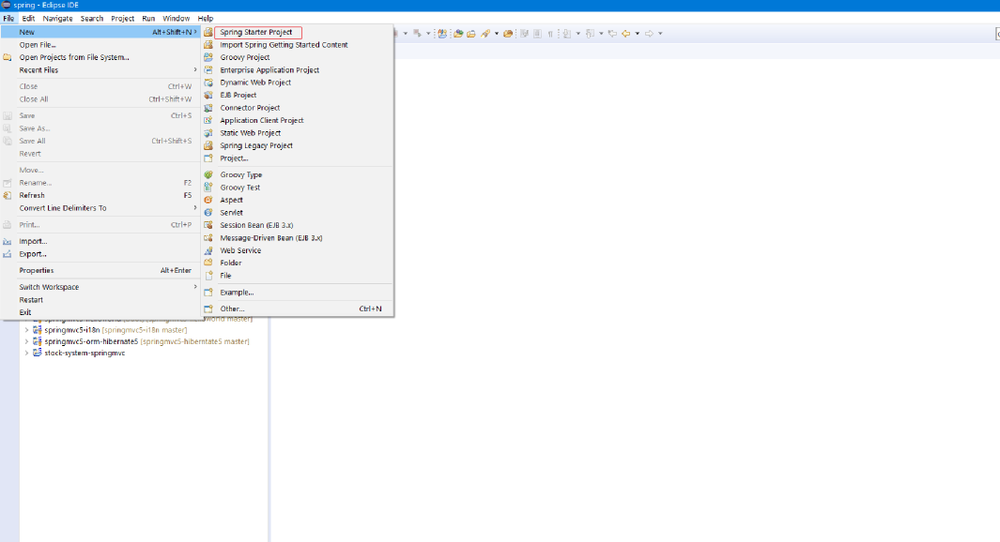
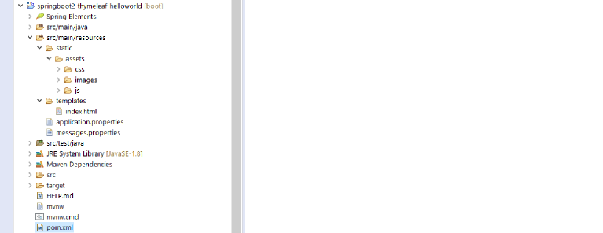

Descarga el proyecto de GitHub.
Ahora que ya sabemos que és y como construir un proyecto con Spring Boot vamos a construir un nuevo proyecto con Spring Boot 2 utilizando para las vistas el motor de plantillasThymeleaf.
Este nuevo proyecto lo construiremos con el plugin Sprint Tool Suite (STS) para Eclipse. Una vez instalado el plugin construimos el proyecto.
A partir de ahí, las opciones son iguales que cuando lo creamos desde Spring Initializr, solo acordarse de añadir a las dependencias aparte de la dependencia Spring Web la dependencia Thymeleaf.
Esto nos genera un proyecto con una estructura como la del proyecto anterior. Ver la estructura del proyecto anterior.
<dependencies>
<dependency>
<groupId>org.springframework.boot</groupId>
<artifactId>spring-boot-starter-thymeleaf</artifactId>
</dependency>
<dependency>
<groupId>org.springframework.boot</groupId>
<artifactId>spring-boot-starter-web</artifactId>
</dependency>
<dependency>
<groupId>org.springframework.boot</groupId>
<artifactId>spring-boot-starter-test</artifactId>
<scope>test</scope>
<exclusions>
<exclusion>
<groupId>org.junit.vintage</groupId>
<artifactId>junit-vintage-engine</artifactId>
</exclusion>
</exclusions>
</dependency>
</dependencies>
Observamos la nueva dependencia Thymeleaf en el archivo pom.xml.
Repetimos lo del proyecto anterior a modo de repaso. Spring Initializr crea una clase anotada con @SpringBootApplication, anotación que es equivalente a @Configuration, @EnableAutoConfiguration y @ComponentScan.
package com.example.demo;
import org.springframework.boot.SpringApplication;
import org.springframework.boot.autoconfigure.SpringBootApplication;
@SpringBootApplication
public class Springboot2ThymeleafHelloworldApplication {
public static void main(String[] args) {
SpringApplication.run(Springboot2ThymeleafHelloworldApplication.class, args);
}
}
package com.wanchopi.controller;
import java.time.LocalDateTime;
import java.util.HashMap;
import java.util.Map;
import org.springframework.stereotype.Controller;
import org.springframework.web.bind.annotation.RequestMapping;
import org.springframework.web.servlet.ModelAndView;
/**
* Main controller
* @author Wanchopi
*
*/
@Controller
public class HelloController {
@RequestMapping("/")
public ModelAndView home() {
Map<String, Object> myMap = new HashMap<String, Object>();
String now = "Hello World";
int day = LocalDateTime.now().getDayOfMonth();
int month = LocalDateTime.now().getMonthValue();
int year = LocalDateTime.now().getYear();
String date = month + "/" + day + "/" + year;
myMap.put("now", now);
myMap.put("date", date);
ModelAndView mav = new ModelAndView("index", "myModel", myMap);
return mav;
}
}
El controlador consta de un solo método que saluda y pone la fecha actual.
Recordamos la dependencia del proyecto anterior:
<dependency>
<groupId>org.springframework.boot</groupId>
<artifactId>spring-boot-starter-test</artifactId>
<scope>test</scope>
<exclusions>
<exclusion>
<groupId>org.junit.vintage</groupId>
<artifactId>junit-vintage-engine</artifactId>
</exclusion>
</exclusions>
</dependency>
Vamos a realizar un test al controlador.
package com.wanchopi.controller;
import static org.junit.jupiter.api.Assertions.assertEquals;
import static org.junit.jupiter.api.Assertions.assertNotNull;
import java.util.HashMap;
import java.util.Map;
import org.junit.jupiter.api.Test;
import org.springframework.beans.factory.annotation.Autowired;
import org.springframework.boot.test.context.SpringBootTest;
import org.springframework.web.servlet.ModelAndView;
/**
* Controller class Test
* @author Wanchopi
*
*/
@SpringBootTest
public class HelloControllerTest {
@Autowired
private HelloController controller;
private Map<String, Object> myMap = new HashMap<String, Object>();
@Test
public void testHome() {
ModelAndView mav = controller.home();
assertNotNull(mav);
}
@SuppressWarnings("unchecked")
@Test
public void testGreeting() {
ModelAndView mav = controller.home();
myMap = (Map<String, Object>) mav.getModel().get("myModel");
String greeting = (String) myMap.get("now");
assertEquals("Hello World", greeting);
}
}
Con la anotación @SpringBootTest se crea todo el contexto de la aplicación. Marcamos con la anotación @Test el método que queremos probar y lo demás es Java puro y duro.
En las vistas está la novedad. Echemos un vistazo al paquete donde está el quid del asunto. Antes de seguir, deberíais pasar por la página oficial de Thymeleaf
En la carpeta src/main/resources está todo lo referente al front-end de la aplicación. Lo desglosamos;
Y por fin la vista:
<!DOCTYPE html>
<html xmlns:th="http://www.thymeleaf.org">
<head>
<title>springboot-thymeleaf</title>
<meta charset="utf-8" />
<link rel="stylesheet" type="text/css" th:href="@{/assets/css/bootstrap.min.css}"/>
<link rel="stylesheet" type="text/css" th:href="@{/assets/css/main.css}"/>
</head>
<body>
<!-- Image and text -->
<nav class="navbar navbar-light bg-light">
<a class="navbar-brand" href="#">
<img alt="logo" th:src="@{/assets/images/spring_50x50.png}" width="30" height="30" class="d-inline-block align-top">
Home
</a>
</nav>
<header>
<!-- header -->
<div class="container">
<div class="row">
<div class="col-lg-12" align="center">
<img alt="logo" th:src="@{/assets/images/logo.png}">
</div>
</div>
</div>
</header>
<!-- main -->
<div class="container-fluid" align="center"> <!-- main container -->
<h1 th:text="#{text.title}"></h1>
<p style="margin-top:100px;"><span th:text="${myModel.now}"></span>, <span th:text="${myModel.date}"></span></p>
</div> <!-- /main container -->
<footer>
<div class="container">
<span th:text="#{text.footer}" class="text-muted">App footer</span>
</div>
</footer>
<!-- JS -->
<script type="text/javascript" src="@{/assets/js/bootstrap.min.js}"></script>
<script type="text/javascript" src="@{/assets/js/jquery.min.js}"></script>
<script>
$(document).ready(function() {
// jquery code ...
});
</script>
</body>
</html>
Lo primero es añadir el espacio de nombres a la etiqueta html:
<html xmlns:th="http://www.thymeleaf.org">
Después observar como se accede a los recursos estáticos; hojas de estilo, imágenes, scripts, etc...:
<link rel="stylesheet" type="text/css" th:href="@{/assets/css/bootstrap.min.css}"/>
...
<img alt="logo" th:src="@{/assets/images/spring_50x50.png}" width="30" height="30" class="d-inline-block align-top">
...
<script type="text/javascript" src="@{/assets/js/jquery.min.js}"></script>
Ahora recuperamos los valores pertenecientes a los pares clave-valor del archivo messages.properties:
<h1 th:text="#{text.title}"></h1>
Por último, vamos a "rescatar" el valor que estamos enviando desde el controlador:
<p style="margin-top:100px;"><span th:text="${myModel.now}"></span>, <span th:text="${myModel.date}"></span>
Pero Thymeleaf aun puede hacer mas por nosotros. En el próximo tutorial veremos la utilización de los layouts. De momento este lo podeís descargar de github